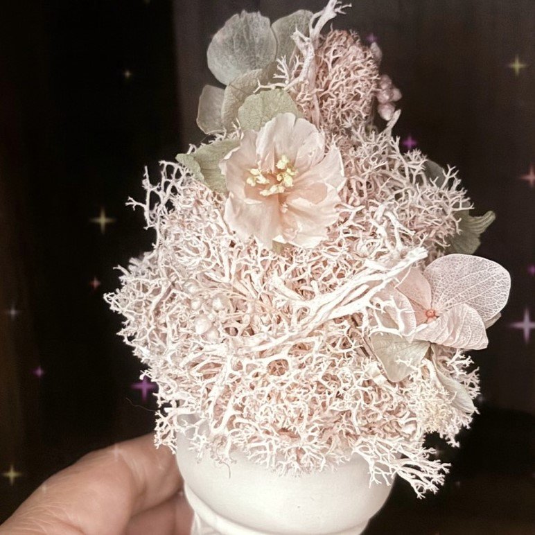

〖 🌸Ribbon Bunny Fleur 情人節快閃課🌸〗

春天來了，櫻花也開了！
情人節將至，情侶們可以相約櫻花樹下、欣賞專屬這一季的繽紛浪漫，也可以一起來體驗手作的幸福時光，珍藏一只甜美可人的櫻花冰淇淋😋。
🔸時間：
2/14（五）15：00 ~ 17：00
2/16（日）10：00 ~ 12：00
🔸地點：羅斯朵晴天現烘咖啡1F
（高雄市左營區忠言路115號，近凹子底捷運站、輕軌C24愛河之心站及義享天地）
🌸作品A：粉櫻冰淇淋
使用永生花材改造製作粉色櫻花，綴以大葉繡球，與永生馴鹿苔組合成甜美可愛的粉櫻冰淇淋。
🌸作品B：紫櫻冰淇淋
使用永生花材改造製作粉紫色櫻花，綴以紫色兔尾草，與永生馴鹿苔組合成夢幻浪漫的紫櫻冰淇淋。
🔸費用：1280元（2人同行價2500元）
🔸課程作品說明：
🈶使用日本大地農園永生花材
🈶附獨家訂製造型石膏擴香石
🈶教授永生花製作櫻花改造花
🈶分享其他延伸設計
🔷️注意事項：
1.課程內容不限有無花藝基礎者。
2.請私訊報名，並於報名後三日內匯款，匯款後回報帳號末5碼、姓名與可聯絡電話，方為報名成功。
請至少於上課日三日前報名。報名後如因故無法上課，因花材、資材已事先準備，可由老師代為製作、領回作品。
3.為響應環保，建議攜帶紙箱或提袋攜回作品。